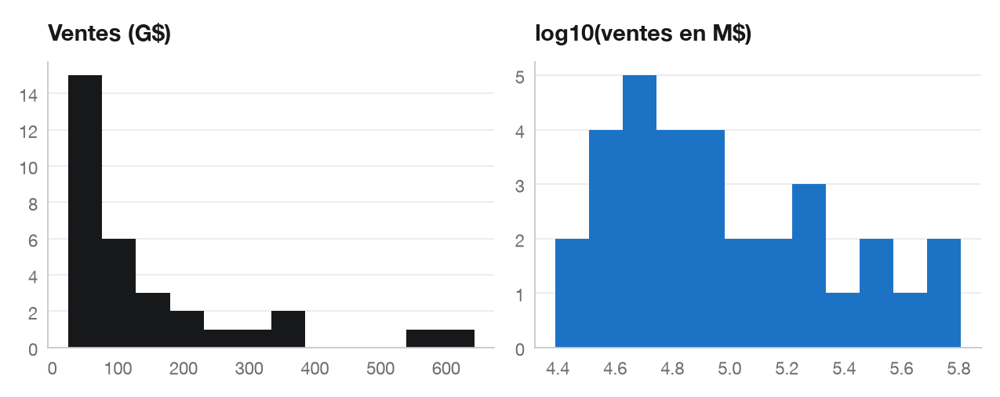
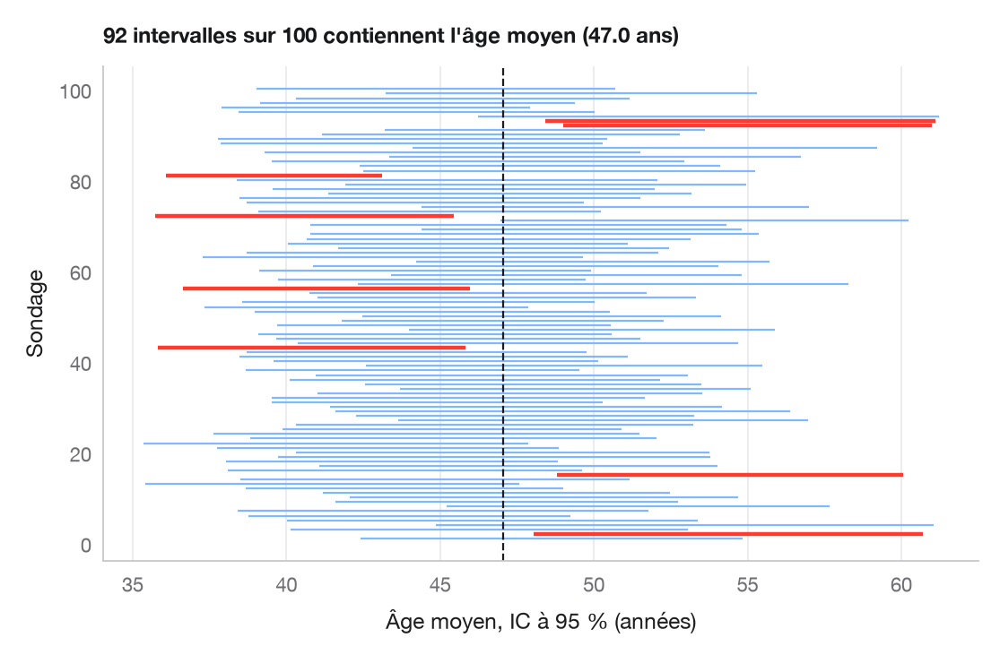
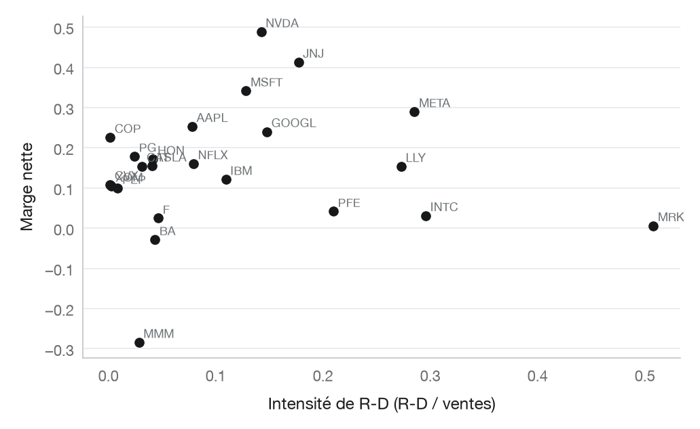
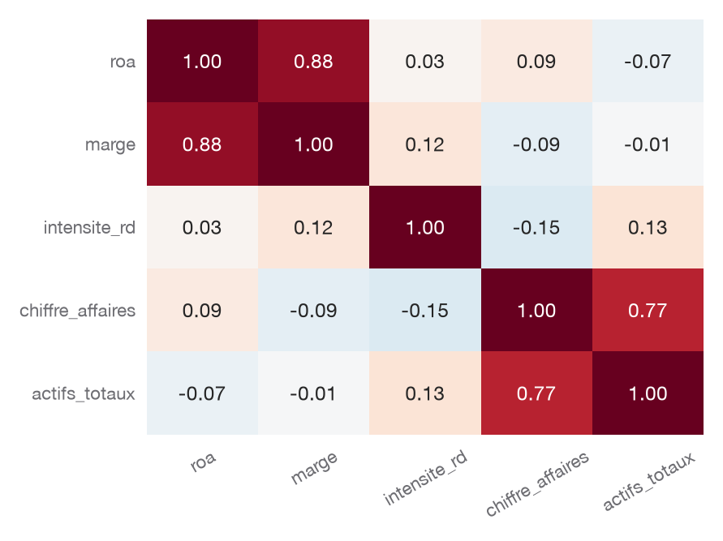
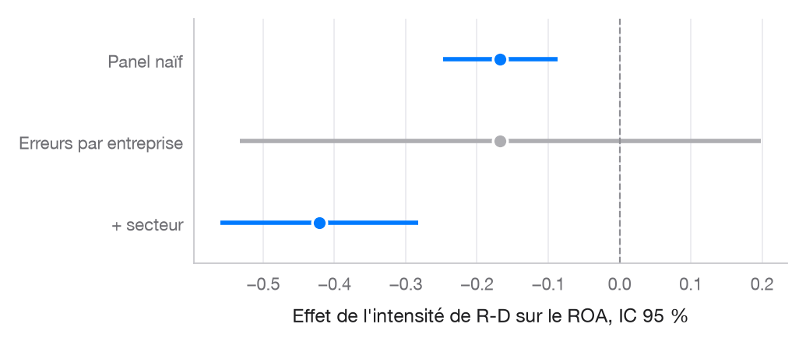
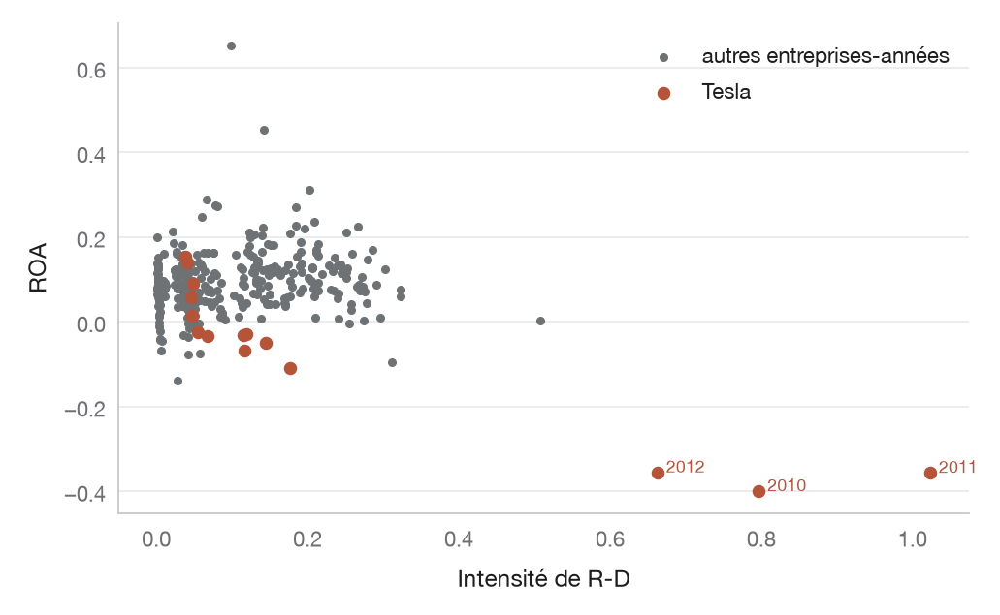

entreprises = pd.read_csv("data/entreprises.csv")
entreprises["roa"] = entreprises["resultat_net"] / entreprises["actifs_totaux"]
entreprises["marge"] = entreprises["resultat_net"] / entreprises["chiffre_affaires"]
entreprises["intensite_rd"] = entreprises["rd"] / entreprises["chiffre_affaires"]
e23 = entreprises[entreprises["annee"] == 2023].copy() # une ligne par entreprise6 Statistiques de base : décrire, comparer, relier
6.1 Ce que l’on voit, et ce que l’on peut affirmer
Les cinq premiers chapitres ont appris à obtenir des données et à les regarder. Celui-ci pose une question que le regard seul ne tranche pas : une différence observée est-elle assez solide pour être affirmée ? Tesla affiche en 2023 une marge nette supérieure à celle de Ford ; les entreprises technologiques semblent plus rentables que les autres ; les grandes dépenses de R-D paraissent aller avec de grands profits. Chacune de ces impressions peut être vraie, ou être un accident de l’échantillon que l’on a sous les yeux.
La statistique ne supprime pas cette incertitude. Elle la mesure, et elle oblige à dire, avec chaque résultat, de combien il pourrait être faux. C’est une discipline plus qu’une technique : la plupart des erreurs de ce chapitre ne sont pas des erreurs de calcul, mais des phrases qui affirment plus que les chiffres ne le permettent.
Le chapitre travaille sur trois indicateurs construits à partir de data/entreprises.csv : le rendement de l’actif (roa, résultat net divisé par les actifs totaux), la marge nette (marge, résultat net divisé par le chiffre d’affaires) et l’intensité de R-D (intensite_rd, dépenses de R-D divisées par le chiffre d’affaires).
6.1.1 Voir la statistique
Chaque notion du chapitre a son graphique dans la galerie PyStatlas (Warin 2026), présentée au chapitre précédent. La galerie montre déjà ces graphiques sur de vraies données de sciences sociales ; le chapitre les adapte à nos entreprises.
| Notion | Graphique de la galerie | L’exemple de la galerie |
|---|---|---|
| Forme d’une distribution | Diagramme Q–Q | revenus de 235 ménages belges (Engel), bruts puis en log |
| Intervalle de confiance | Ce que veut dire un IC à 95 % | âge moyen des répondants de l’enquête électorale américaine de 1996 |
| Bootstrap | Distribution bootstrap | criminalité et familles monoparentales dans les 51 États |
| Comparer deux groupes | Graphique d’estimation | criminalité violente des États pauvres et moins pauvres |
| Relier deux variables | Nuage avec statistiques | 303 districts scolaires californiens |
| Régresser | Graphique de coefficients | ce qui prédit la criminalité violente des États |
6.2 Décrire
6.2.1 Le centre
La moyenne est le point d’équilibre d’une distribution ; la médiane, le milieu de son classement. Les deux coïncident quand la distribution est symétrique, et divergent quand elle ne l’est pas. Le chiffre d’affaires de nos 32 entreprises en 2023 en donne un exemple net.
ca = e23["chiffre_affaires"]
print(f"Moyenne : {ca.mean():,.0f} M$ Médiane : {ca.median():,.0f} M$ Asymétrie : {ca.skew():.2f}")Moyenne : 143,776 M$ Médiane : 79,900 M$ Asymétrie : 2.01La moyenne (143,776 millions de dollars) est près de deux fois la médiane (79,900 millions), parce que quelques géants de la distribution — Walmart et Amazon en tête — tirent le point d’équilibre vers eux. Pour une variable de taille (ventes, actifs, effectifs, capitalisation), la médiane décrit mieux « l’entreprise typique » ; la moyenne reste utile quand c’est le total qui compte. Dans le doute, on rapporte les deux.
6.2.2 La dispersion
L’écart type mesure l’éloignement typique à la moyenne ; il est sensible aux valeurs extrêmes. L’écart interquartile (Q3 − Q1) délimite la moitié centrale des observations et y résiste.
print(e23["roa"].describe().round(3))count 32.000
mean 0.103
std 0.099
min -0.138
25% 0.057
50% 0.094
75% 0.144
max 0.453
Name: roa, dtype: float64(e23.groupby("secteur")["roa"]
.agg(n="count", moyenne="mean", mediane="median", ecart_type="std")
.sort_values("mediane", ascending=False)
.round(3))| n | moyenne | mediane | ecart_type | |
|---|---|---|---|---|
| secteur | ||||
| Technologie | 7 | 0.186 | 0.170 | 0.146 |
| Restauration | 2 | 0.146 | 0.146 | 0.007 |
| Biens de consommation | 4 | 0.119 | 0.116 | 0.026 |
| Médias et divertissement | 1 | 0.111 | 0.111 | NaN |
| Énergie | 3 | 0.097 | 0.096 | 0.016 |
| Commerce de détail | 4 | 0.070 | 0.068 | 0.013 |
| Pharmaceutique | 4 | 0.076 | 0.046 | 0.096 |
| Industrie | 4 | 0.014 | 0.038 | 0.117 |
| Automobile | 3 | 0.064 | 0.036 | 0.067 |
La colonne n est la première à lire. Un secteur représenté par deux entreprises n’a pas d’écart type digne de ce nom, et une moyenne sur deux observations n’est qu’une anecdote chiffrée.
6.2.3 La forme
fig, (a1, a2) = plt.subplots(1, 2, figsize=(8, 3.2))
a1.hist(e23["chiffre_affaires"] / 1000, bins=12, color=CL.ink)
a1.set_title("Ventes (G$)")
a2.hist(np.log10(e23["chiffre_affaires"]), bins=12, color=CL.accent)
a2.set_title("log10(ventes en M$)")
plt.tight_layout()
plt.show()
Le passage au logarithme est courant pour les variables de taille. Il a un prix : une différence de logarithmes est une différence relative. On ne peut plus dire « 10 milliards de plus », mais « tant de pour cent de plus ».
6.3 De l’échantillon à la population
Nos 32 entreprises ne sont pas « les entreprises ». Ce sont de grandes sociétés cotées aux États-Unis, choisies parce qu’elles sont connues — c’est-à-dire, pour la plupart, parce qu’elles ont réussi. Toute conclusion porte d’abord sur elles. L’étendre à une population plus large exige un argument, et aucun test statistique ne remplace cet argument.
Supposons tout de même que ces entreprises soient un tirage dans une population plus vaste. Un autre tirage aurait donné une autre moyenne. L’erreur type mesure de combien, typiquement :
\[ \text{ET}(\bar x) = \frac{s}{\sqrt{n}} \]
roa = e23["roa"].dropna()
n, moy, s = len(roa), roa.mean(), roa.std()
et = s / np.sqrt(n)
ic = stats.t.interval(0.95, df=n - 1, loc=moy, scale=et)
print(f"ROA moyen = {moy:.3f}, erreur type = {et:.3f}, IC 95 % = [{ic[0]:.3f} ; {ic[1]:.3f}]")ROA moyen = 0.103, erreur type = 0.018, IC 95 % = [0.067 ; 0.139]L’intervalle de confiance à 95 % se lit ainsi : si l’on répétait l’échantillonnage un grand nombre de fois, 95 % des intervalles construits de cette façon contiendraient la vraie moyenne. Il ne dit pas qu’il y a 95 % de chances que la vraie moyenne soit dans cet intervalle-ci ; la vraie moyenne n’est pas aléatoire, c’est l’intervalle qui l’est. La nuance paraît scolastique ; elle devient importante dès que l’on compare deux intervalles.
Le bootstrap reprend la même idée sans formule : on ré-échantillonne nos propres données, avec remise, des milliers de fois, et l’on regarde comment varie la statistique.
rng = np.random.default_rng(60)
boot_moy = [rng.choice(roa.values, size=n).mean() for _ in range(5_000)]
boot_med = [np.median(rng.choice(roa.values, size=n)) for _ in range(5_000)]
print(f"IC bootstrap de la moyenne : [{np.percentile(boot_moy, 2.5):.3f} ; {np.percentile(boot_moy, 97.5):.3f}]")
print(f"IC bootstrap de la médiane : [{np.percentile(boot_med, 2.5):.3f} ; {np.percentile(boot_med, 97.5):.3f}]")IC bootstrap de la moyenne : [0.071 ; 0.137]
IC bootstrap de la médiane : [0.075 ; 0.121]Les deux méthodes donnent des intervalles voisins pour la moyenne. Le bootstrap a l’avantage de s’appliquer tel quel à la médiane, pour laquelle il n’existe pas de formule simple.
6.3.1 Ce que « 95 % » veut dire
La lecture correcte d’un intervalle de confiance porte sur la méthode, pas sur un intervalle particulier. Pour la voir, il faut une population dont on connaît la vraie moyenne. La galerie utilise les 944 répondants de l’enquête électorale américaine de 1996 : leur âge moyen est connu, et l’on peut y tirer cent sondages de trente personnes (Figure 6.2).
import statsmodels.api as sm
age = sm.datasets.anes96.load_pandas().data["age"].to_numpy()
rng = np.random.default_rng(2024)
mu, n_s, reps = age.mean(), 30, 100
ech = np.array([rng.choice(age, n_s, replace=False) for _ in range(reps)])
bas_s, haut_s = stats.t.interval(0.95, df=n_s - 1, loc=ech.mean(axis=1),
scale=ech.std(axis=1, ddof=1) / np.sqrt(n_s))
rate = (bas_s > mu) | (haut_s < mu)
fig, ax = plt.subplots(figsize=(7, 4.6))
y = np.arange(1, reps + 1)
ax.hlines(y, bas_s, haut_s, color=np.where(rate, ROUGE, "#7FB8FF"), lw=np.where(rate, 2, 1))
ax.axvline(mu, color="#1D1D1F", ls="--", lw=1)
ax.set(xlabel="Âge moyen, IC à 95 % (années)", ylabel="Sondage")
ax.grid(axis="y", visible=False); ax.grid(axis="x")
ax.set_title(f"{reps - rate.sum()} intervalles sur {reps} contiennent l'âge moyen ({mu:.1f} ans)", fontsize=11)
plt.show()
Environ 95 intervalles sur 100 contiennent la vraie moyenne ; les autres la ratent sans que rien, de l’intérieur, ne les signale. Dans la pratique, on ne dispose que d’un sondage — une seule de ces lignes. Nos 32 entreprises en sont une, avec une réserve de taille : elles n’ont pas été tirées au hasard.
6.4 Comparer
6.4.1 La logique d’un test
Un test statistique part d’une hypothèse nulle — « le ROA moyen est nul », « les deux groupes ont la même moyenne » — et calcule la probabilité d’observer un écart au moins aussi grand que celui des données si cette hypothèse était vraie. Cette probabilité est la valeur p.
t1 = stats.ttest_1samp(roa, popmean=0)
print(f"t = {t1.statistic:.2f}, p = {t1.pvalue:.2g}")t = 5.88, p = 1.8e-06Nos entreprises sont rentables en moyenne, et un ROA nul serait très incompatible avec ces données. Personne n’en doutait : l’échantillon a été construit à partir d’entreprises qui ont réussi. Le test répond rigoureusement à la question posée ; il ne dit rien de la pertinence de la question.
6.4.2 Deux groupes indépendants
Les entreprises technologiques sont-elles plus rentables que les autres ?
tech = e23.loc[e23["secteur"] == "Technologie", "roa"]
autres = e23.loc[e23["secteur"] != "Technologie", "roa"]
welch = stats.ttest_ind(tech, autres, equal_var=False)
print(f"Tech : n = {len(tech)}, moyenne = {tech.mean():.3f} · Autres : n = {len(autres)}, moyenne = {autres.mean():.3f}")
print(f"Écart = {tech.mean() - autres.mean():+.3f}, t = {welch.statistic:.2f}, p = {welch.pvalue:.3f}")Tech : n = 7, moyenne = 0.186 · Autres : n = 25, moyenne = 0.080
Écart = +0.106, t = 1.85, p = 0.108L’écart est de 11 points de ROA : considérable du point de vue d’un gestionnaire. La valeur p, 0.11, dépasse pourtant le seuil conventionnel de 5 %. Les deux constats ne se contredisent pas. Le groupe technologique compte 7 entreprises seulement, et leurs ROA sont très dispersés : Nvidia et Intel n’ont presque rien en commun en 2023. Ces données ne suffisent pas à établir l’écart — ce qui ne veut pas dire que l’écart n’existe pas.
Le test utilisé est celui de Welch (equal_var=False), qui n’exige pas que les deux groupes aient la même variance. Le test de Student classique l’exige ; rien ne la garantit ici. Quand les variances sont égales, les deux tests donnent presque la même réponse ; quand elles ne le sont pas, Welch protège. C’est le choix par défaut de ce cours.
6.4.3 Deux séries appariées
Tesla et Ford sont observées les mêmes années : on peut les comparer année par année, ce qui élimine tout ce que les deux entreprises partagent une année donnée (la conjoncture, les taux, la pandémie).
tf = (entreprises[entreprises["ticker"].isin(["TSLA", "F"])]
.pivot(index="annee", columns="ticker", values="marge"))
tf["ecart"] = tf["TSLA"] - tf["F"]
tf.round(3)| ticker | F | TSLA | ecart |
|---|---|---|---|
| annee | |||
| 2010 | 0.051 | -1.322 | -1.373 |
| 2011 | 0.149 | -1.246 | -1.395 |
| 2012 | 0.042 | -0.959 | -1.001 |
| 2013 | 0.081 | -0.037 | -0.118 |
| 2014 | 0.009 | -0.092 | -0.100 |
| 2015 | 0.049 | -0.220 | -0.269 |
| 2016 | 0.030 | -0.096 | -0.127 |
| 2017 | 0.049 | -0.167 | -0.216 |
| 2018 | 0.023 | -0.045 | -0.069 |
| 2019 | 0.001 | -0.035 | -0.036 |
| 2020 | -0.010 | 0.023 | 0.033 |
| 2021 | 0.132 | 0.105 | -0.027 |
| 2022 | -0.013 | 0.155 | 0.167 |
| 2023 | 0.025 | 0.155 | 0.130 |
| 2024 | 0.032 | 0.073 | 0.041 |
p_tout = stats.ttest_rel(tf["TSLA"], tf["F"])
p_rec = stats.ttest_rel(tf.loc[2020:, "TSLA"], tf.loc[2020:, "F"])
print(f"2010-2024 : écart moyen {tf['ecart'].mean():+.3f}, p = {p_tout.pvalue:.3f}")
print(f"2020-2024 : écart moyen {tf.loc[2020:, 'ecart'].mean():+.3f}, p = {p_rec.pvalue:.3f}")2010-2024 : écart moyen -0.291, p = 0.048
2020-2024 : écart moyen +0.069, p = 0.121Sur quinze ans, l’écart moyen est négatif : les pertes massives des années de démarrage de Tesla dominent la moyenne. Depuis 2020, Tesla dépasse Ford 4 années sur cinq, mais cinq années ne suffisent pas à rejeter l’égalité au seuil de 5 % (p = 0.12). « Tesla est plus rentable que Ford » est donc une phrase incomplète : il lui manque une période, une mesure et une incertitude.
Elle porte aussi un piège plus subtil. Si l’on choisit la période après avoir regardé les données — parce qu’elle donne le résultat espéré —, le test ne teste plus rien : il confirme un choix déjà fait. La période se fixe avant le calcul, et se justifie par un argument (un changement de modèle d’affaires, une première année rentable), pas par la valeur p qu’elle produit.
6.4.4 Ce qu’une valeur p n’est pas
L’American Statistical Association a jugé nécessaire, en 2016, de rappeler six principes sur la valeur p (Wasserstein et Lazar 2016). Quatre d’entre eux concernent directement le gestionnaire. Une valeur p mesure l’incompatibilité des données avec un modèle précis ; elle n’est pas la probabilité que l’hypothèse étudiée soit vraie ; elle ne mesure pas l’ampleur ni l’importance d’un effet ; et elle ne devrait pas, à elle seule, fonder une décision.
Le contresens le plus coûteux est de lire « non significatif » comme « aucun effet ». L’exemple du secteur technologique le montre : un écart de plusieurs points, mesuré sur sept entreprises, peut ne pas être significatif tout en étant important. Le contresens symétrique — « significatif » donc « important » — n’est pas moins répandu, et une littérature entière montre comment la recherche de résultats significatifs, multipliée par la liberté de choisir ses spécifications, remplit les revues de résultats fragiles (Ioannidis 2005). En management, Miller et Bamberger plaident pour l’inverse : publier et lire les réplications et les résultats nuls comme des découvertes à part entière (Miller et Bamberger 2016).
La règle de ce cours en découle : on rapporte d’abord l’écart en unités, puis son intervalle de confiance, et seulement ensuite la valeur p.
Le graphique d’estimation de la galerie met cette règle en image : à gauche, chaque observation des deux groupes ; à droite, l’écart de moyennes, sur un axe dont le zéro est la moyenne du premier groupe, avec la distribution bootstrap de l’écart et son intervalle. L’exemple de la galerie compare la criminalité violente des États pauvres et moins pauvres. Appliqué à nos sept entreprises technologiques, il montre aussi une limite : avec si peu d’observations, l’intervalle bootstrap, qui ne connaît que les valeurs observées, est plus étroit que celui du test de Welch. Quand deux méthodes honnêtes divergent sur un petit échantillon, la conclusion prudente l’emporte.
6.5 Relier
6.5.1 Corrélations
Les entreprises qui investissent en R-D ont-elles de meilleures marges ? Le premier geste est toujours le nuage de points.
x = e23.dropna(subset=["intensite_rd", "marge"])
fig, ax = plt.subplots(figsize=(6.5, 4))
ax.scatter(x["intensite_rd"], x["marge"], color=CL.ink)
for _, r in x.iterrows():
ax.annotate(r["ticker"], (r["intensite_rd"], r["marge"]), fontsize=8,
color=CL.muted, xytext=(3, 3), textcoords="offset points")
ax.set_xlabel("Intensité de R-D (R-D / ventes)")
ax.set_ylabel("Marge nette")
plt.show()
pear = stats.pearsonr(x["intensite_rd"], x["marge"])
spear = stats.spearmanr(x["intensite_rd"], x["marge"])
print(f"n = {len(x)} · Pearson r = {pear.statistic:+.3f} (p = {pear.pvalue:.2f}) · Spearman rho = {spear.statistic:+.3f} (p = {spear.pvalue:.2f})")n = 23 · Pearson r = +0.054 (p = 0.81) · Spearman rho = +0.123 (p = 0.58)La corrélation de Pearson mesure une relation linéaire, et une seule observation extrême peut la fabriquer ou l’effacer. Celle de Spearman travaille sur les rangs : elle mesure une relation monotone, quelle qu’en soit la forme, et résiste aux extrêmes. Ici, sur 23 entreprises, les deux sont proches de zéro (r = +0.05, rho = +0.12) : en 2023, on ne détecte aucune relation entre intensité de R-D et marge nette. Neuf entreprises n’entrent pas dans ce calcul, parce qu’elles ne publient pas de ligne de R-D ; la réponse ne porte que sur celles qui le font.
import seaborn as sns
cols = ["roa", "marge", "intensite_rd", "chiffre_affaires", "actifs_totaux"]
fig, ax = plt.subplots(figsize=(5.6, 4.2))
sns.heatmap(e23[cols].corr(method="spearman"), annot=True, fmt=".2f",
cmap="RdBu_r", vmin=-1, vmax=1, cbar=False, ax=ax)
ax.tick_params(axis="x", rotation=30)
ax.grid(False)
plt.show()
6.5.2 Une première régression
La régression linéaire simple résume le nuage par une droite :
\[ \text{ROA}_i = \beta_0 + \beta_1 \times \text{intensité R-D}_i + \varepsilon_i \]
m = smf.ols("roa ~ intensite_rd", data=e23.dropna(subset=["intensite_rd", "roa"])).fit()
print(m.summary().tables[1])
print(f"R² = {m.rsquared:.3f}, n = {int(m.nobs)}")================================================================================
coef std err t P>|t| [0.025 0.975]
--------------------------------------------------------------------------------
Intercept 0.1090 0.034 3.226 0.004 0.039 0.179
intensite_rd -0.0288 0.198 -0.145 0.886 -0.441 0.383
================================================================================
R² = 0.001, n = 23Le coefficient de intensite_rd est la variation du ROA associée à une hausse d’une unité d’intensité de R-D — soit cent points de pourcentage ; pour un point, on le divise par cent. Ici il vaut -0.029, son intervalle de confiance contient largement zéro et le R² est quasi nul. La régression dit, avec d’autres mots, ce que disait la corrélation.
6.6 Corrélation n’est pas causalité
Même une corrélation solide n’autoriserait pas la recommandation « investissez en R-D pour être plus rentable ». Trois histoires produisent la même corrélation : la R-D crée des produits rentables (causalité) ; les entreprises rentables peuvent se permettre la R-D (causalité inverse) ; un troisième facteur, comme le secteur, détermine les deux (variable confondante). La régression ne choisit pas entre elles. C’est le dispositif de recherche qui le fait — et c’est l’objet des articles discutés aux séances 7 à 11.
6.6.1 Un panel n’est pas un échantillon plus grand
Il est tentant d’empiler les quinze années pour gagner des observations.
panel = entreprises.dropna(subset=["intensite_rd", "roa"])
naif = smf.ols("roa ~ intensite_rd", data=panel).fit()
grappe = smf.ols("roa ~ intensite_rd", data=panel).fit(
cov_type="cluster", cov_kwds={"groups": panel["ticker"]})
print(f"{int(naif.nobs)} lignes, {panel['ticker'].nunique()} entreprises")
print(f"Naïf : coef = {naif.params['intensite_rd']:+.3f}, ET = {naif.bse['intensite_rd']:.3f}, p = {naif.pvalues['intensite_rd']:.3f}")
print(f"Grappes : coef = {grappe.params['intensite_rd']:+.3f}, ET = {grappe.bse['intensite_rd']:.3f}, p = {grappe.pvalues['intensite_rd']:.3f}")343 lignes, 24 entreprises
Naïf : coef = -0.167, ET = 0.041, p = 0.000
Grappes : coef = -0.167, ET = 0.186, p = 0.369Les 343 lignes ne sont pas 343 informations indépendantes : elles viennent de 24 entreprises, et Apple en 2022 ressemble beaucoup à Apple en 2023. L’erreur type naïve l’ignore et se montre trop optimiste (p = 5e-05). En regroupant les erreurs par entreprise (cov_type="cluster"), le coefficient ne change pas, mais l’erreur type est multipliée par 4.6 et la valeur p passe à 0.37. Le résultat « significatif » disparaît.
6.6.2 Contrôler le secteur
secteur = smf.ols("roa ~ intensite_rd + C(secteur)", data=panel).fit(
cov_type="cluster", cov_kwds={"groups": panel["ticker"]})
print(f"Avec secteur : coef = {secteur.params['intensite_rd']:+.3f}, p = {secteur.pvalues['intensite_rd']:.2g}")Avec secteur : coef = -0.421, p = 2.4e-09C(secteur) ajoute une constante par secteur : on compare désormais les observations à l’intérieur de leur secteur. Le coefficient passe de -0.17 à -0.42, et devient nettement différent de zéro. À secteur égal, les observations (entreprise-année) à forte intensité de R-D vont avec un ROA plus faible. Le secteur masquait donc une relation négative.
Le graphique de coefficients de la galerie résume ces trois estimations d’un coup d’œil : un point par modèle, son intervalle, une ligne verticale à zéro (Figure 6.5).
modeles = {"Panel naïf": naif, "Erreurs par entreprise": grappe, "+ secteur": secteur}
fig, ax = plt.subplots(figsize=(6.5, 2.8))
for i, (nom, m) in enumerate(modeles.items()):
b = m.params["intensite_rd"]
bas_c, haut_c = m.conf_int().loc["intensite_rd"]
c = BLEU if m.pvalues["intensite_rd"] < 0.05 else "#AEAEB2"
ax.hlines(i, bas_c, haut_c, color=c, lw=2.5)
ax.scatter(b, i, s=70, color=c, edgecolor="white", lw=1.5, zorder=3)
ax.axvline(0, color=GRIS, lw=1, ls="--")
ax.set_yticks(range(len(modeles)), list(modeles))
ax.set_ylim(len(modeles) - 0.5, -0.5)
ax.set_xlabel("Effet de l'intensité de R-D sur le ROA, IC 95 %")
ax.grid(axis="x"); ax.grid(axis="y", visible=False)
plt.show()
fig, ax = plt.subplots(figsize=(6.5, 4))
ax.scatter(panel["intensite_rd"], panel["roa"], color=CL.muted, s=12, label="autres entreprises-années")
t = panel[panel["ticker"] == "TSLA"]
ax.scatter(t["intensite_rd"], t["roa"], color=CL.warn, s=30, label="Tesla")
for _, r in t[t["annee"] <= 2012].iterrows():
ax.annotate(int(r["annee"]), (r["intensite_rd"], r["roa"]), fontsize=8,
color=CL.warn, xytext=(4, 0), textcoords="offset points")
ax.set_xlabel("Intensité de R-D"); ax.set_ylabel("ROA")
ax.legend(frameon=False)
plt.show()
Faut-il en conclure que la R-D détruit de la rentabilité ? Non. Le graphique montre d’où vient une partie de la relation : des entreprises en phase de démarrage, comme Tesla avant 2013, dépensent beaucoup en R-D par rapport à des ventes encore faibles et perdent de l’argent. La causalité va peut-être de la phase de croissance à la fois vers la R-D et vers les pertes. Un coefficient n’est jamais plus solide que le nuage dont il vient.
6.7 Ce que l’on peut écrire
Le travail de ce chapitre se résume en phrases que l’on peut défendre, et en phrases que l’on ne peut pas écrire.
| On peut écrire | On ne peut pas écrire |
|---|---|
| Dans un échantillon de 32 grandes entreprises américaines, en 2023, on ne détecte pas de relation entre intensité de R-D et rentabilité. | La R-D ne sert à rien. |
| À secteur égal, les entreprises-années à forte intensité de R-D ont un ROA plus faible, sur 2010-2024. | Réduire la R-D augmenterait la rentabilité. |
| Depuis 2020, la marge de Tesla dépasse celle de Ford quatre années sur cinq ; l’écart n’est pas statistiquement établi. | Tesla est plus rentable que Ford. |
La colonne de gauche est moins spectaculaire. C’est la seule qui survit à un lecteur attentif.
Pour aller plus loin. Le travail 2 des « premiers pas » demande exactement cet exercice sur une question que vous choisissez : une source importée avec Python, des statistiques descriptives interprétées, deux graphiques, un test lu honnêtement, et un fichier de code qui reproduit chaque chiffre. Consigne : 06-statistiques-de-base/PREMIERS-PAS-TRAVAIL-2.md.
Ioannidis, John P. A. 2005. « Why Most Published Research Findings Are False ». PLoS Medicine 2 (8): e124. https://doi.org/10.1371/journal.pmed.0020124.
Miller, C. Chet, et Peter Bamberger. 2016. « Exploring Emergent and Poorly Understood Phenomena in the Strangest of Places: The Footprint of Discovery in Replications, Meta-Analyses, and Null Findings ». Academy of Management Discoveries 2 (4): 313‑19. https://doi.org/10.5465/amd.2016.0115.
Warin, Thierry. 2026. « PyStatlas: The Python Gallery of Statistical Graphics ». https://warint.github.io/pystatlas/.
Wasserstein, Ronald L., et Nicole A. Lazar. 2016. « The ASA Statement on p-Values: Context, Process, and Purpose ». The American Statistician 70 (2): 129‑33. https://doi.org/10.1080/00031305.2016.1154108.